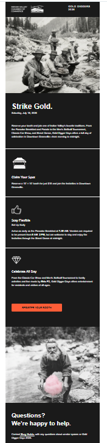
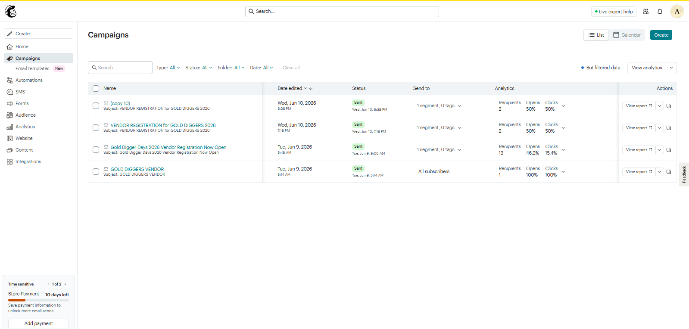
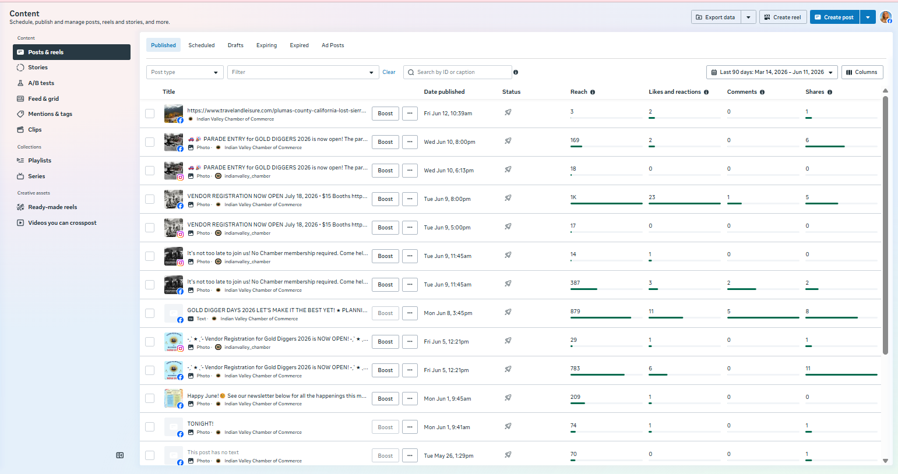

June 2026
PR Report
Gold Digger Days preparations focused on organizing public information, simplifying registration, improving outreach, and documenting systems for future Chamber use.
Summary
June work began with website organization: reducing clutter on the landing page, creating a dedicated Gold Digger Days information page, and adding separate Vendor Registration and Parade Entry pages.
Registration systems evolved through several attempts. Initial WordPress forms, submission sheets, payment links, redirect tools, and Google Sheet experiments became too complex to trust reliably. The process was simplified into Google Forms connected directly to Google Sheets, with payment kept separate.
Social media and outreach centered on attracting vendors, parade entries, and public attention through stronger graphics, better timing, and review of Meta Business Suite metrics.
Key Areas
Website & Registration: Gold Digger Days pages, form experiments, redirect troubleshooting, Google Forms, Google Sheets, and payment instructions.
Social Media & Graphics: Created visual posts in the absence of extensive historical photo archives, reviewed metrics, and cleaned up featured Facebook content.
Digital Outreach & Press Materials: Created clickable vendor advertisements for email distribution and developed clickable information sheets for press and media contacts.
Records: Learned the meeting-notes upload process and archived current and prior-month records according to existing procedures.
Billing
Summary
Additional Hours
Additional hours beyond the monthly budget have been recorded separately.
These hours primarily reflect personal time spent researching and becoming familiar with Chamber systems, website functionality, communication tools, social media analytics, and procedures in order to better understand and support ongoing operations.
Volunteer hours have been retained separately and may be treated independently from billable work.
Website &
Registration
Gold Digger Days Website Organization
Initial work focused on reducing clutter on the Chamber website landing page during Gold Digger Days preparations. A dedicated Gold Digger Days page was created, along with separate Vendor Registration and Parade Entry pages. Buttons were added to direct users to the appropriate event information and registration pages.
Button styles were adapted to fit more naturally with the existing Bliss Branding website design while still standing out as new and important information.
Additional personal time was spent decorating the Gold Digger Days information page at no cost to the Chamber, in an effort to make the page feel more inviting for potential visitors and to present the event as active, fun, and worthwhile for vendors.
Initial Registration System
The original goal was to create a registration system directly within the Chamber website. The initial system included WordPress forms, website submission sheets, existing Chamber Square payment processing, and embedded event information and instructions.
Additional efforts were made to automate registration records and provide easier access to information for Chamber members. Attempts included connecting WordPress form submissions to Google Sheets, exploring Google publishing and embedded HTML options, and researching methods to synchronize records while maintaining the original website forms.
These approaches proved more complicated than anticipated and did not provide a reliable solution.
Form Failures & Redirect Issues
After implementation, it was discovered that some cell phone users were unable to complete registrations. Investigation revealed redirect-related problems affecting certain devices, failures caused by excessive redirects after redirect plugins had been added, and inconsistent behavior between phones and desktop computers.
To prevent losing registrations, form submissions were manually monitored, vendor information was reviewed and maintained separately, and registration records were entered into Google Sheets for Chamber use when necessary. Sign-ups came in slowly enough that vendor fee payments could be confirmed without requiring access to Square information.
Redirect plugins were ultimately removed to restore website functionality.
Simplified Registration System
Following continued troubleshooting, a simpler registration process was adopted. Google Forms were created for registrations and connected directly to Google Sheets, providing easier access to records for Chamber members while reducing reliance on multiple plugins and connected systems.
Registration was separated from payment collection. Simple systems proved easier to understand, troubleshoot, and maintain than more heavily integrated solutions.
Website Accessibility Observations
During Gold Digger Days preparations, several challenges were encountered while working within the current WordPress environment: reliance upon multiple plugins and connected systems, redirect-related issues affecting some users and devices, increased troubleshooting when systems interacted unexpectedly, and administrative functions requiring familiarity with WordPress dashboards and settings.
Future considerations may include evaluating whether the complexity of the current website structure creates unnecessary accessibility barriers for Chamber members and volunteers who may have varying levels of technical experience.
Social Media
& Graphics
Summary
Social media efforts focused on creating more visually engaging content while working within limited historical resources. Many photographs and historical records from previous decades were lost during the Dixie Fire or existed before digital storage and cloud archiving. As a result, new graphics and layouts were developed to promote Gold Digger Days and Chamber activities without relying heavily on historical photographs.
Posts and graphics were created primarily to encourage vendor registration, parade entry, and public awareness of Gold Digger Days.
Content Development
- Created and revised graphics and accompanying text for social media posts.
- Developed posts intended to attract attention and encourage interaction.
- Adapted graphics and layouts as new information became available.
- Experimented with different styles and formats in the absence of extensive historical photographs and digital archives.
- Utilized newly created graphics in place of older photographs and materials that were unavailable or had been lost.
Facebook Management
Assumed management responsibilities for Chamber Facebook accounts and learned to navigate Meta Business Suite tools.
During review of the Chamber's Facebook page, older meeting notes and agenda posts from 2023 were found occupying the featured section. Because business pages no longer allow certain featured posts to be easily unpinned, these posts had become permanent clutter and prevented more current information from occupying that space.
Prior to deleting the posts, the information contained within them was preserved and retained in the event the notes were needed in the future. Once recorded, the outdated posts were removed, allowing more current Chamber information to occupy the featured section.
Metrics & Observations
Historical review of previous posts suggested that many earlier posts relied primarily on text and clip art.
- Graphics generally received more interaction than plain text.
- Broader hashtags appeared to increase reach outside the Indian Valley community.
- Increased interaction appeared to improve visibility.
- Interesting visual content performed better than routine announcements.
- Several recent Gold Digger Days posts achieved substantially greater visibility than many immediately preceding posts.
Historical review also indicated that reels had previously been a successful content format. Future opportunities may include reintroducing reels, event preparation videos, volunteer spotlights, and collaboration with Shelby on future video content.
Email,
Press & Records
Email Marketing & Vendor Outreach
Efforts were made to contact previous vendors and potential vendors in order to encourage participation in Gold Digger Days 2026.
This included learning Mailchimp tools and creating an email campaign containing event information and promotional graphics. The campaign was assembled and distributed as part of vendor outreach efforts.
During this process, additional time was spent learning Mailchimp workflows, image handling, and email formatting requirements. Experience with the campaign highlighted some of the limitations and complexity associated with third-party email marketing platforms and prompted investigation into alternative approaches for future communications.
Press & Media Contacts
Press and community contact information was organized within Google Sheets and duplicated into a Gold Digger Days-specific contact list.
Individualized outreach emails were prepared for publications, calendars, and media contacts. HTML-based inserts and GitHub-hosted graphics were developed for use beneath individual emails, allowing promotional materials to be included without relying upon third-party email marketing services.
Special circumstances surrounded Visit California. Registration deadlines had passed prior to assuming PR responsibilities. Rather than submitting standard promotional materials, communication focused on requesting consideration for inclusion despite the missed deadline.
Simple HTML and self-hosted graphics may provide a reusable approach for future press inquiries and promotional efforts while reducing dependence upon dedicated email marketing platforms.
Contact Organization
Created a Board Members contact label within the IVCC Gmail account to simplify group communication.
Public Records & Meeting Archives
Learned the Chamber procedure for publishing meeting notes by reviewing existing instructions and videos. Uploaded current meeting agendas and notes, then followed existing procedures to create links from the archive page to published meeting notes.
Noticed that meeting records from the previous month had not been posted in the proper spot and uploaded and archived those records as well.
Note to self: When additional time is available, review earlier records and determine whether other missing meeting notes should be uploaded and archived.
Examples
of Work
Selected examples are included for reference, documentation, and future Chamber use.
Email Campaign


Facebook Analytics
